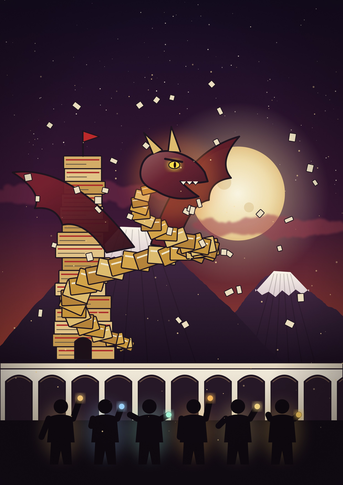
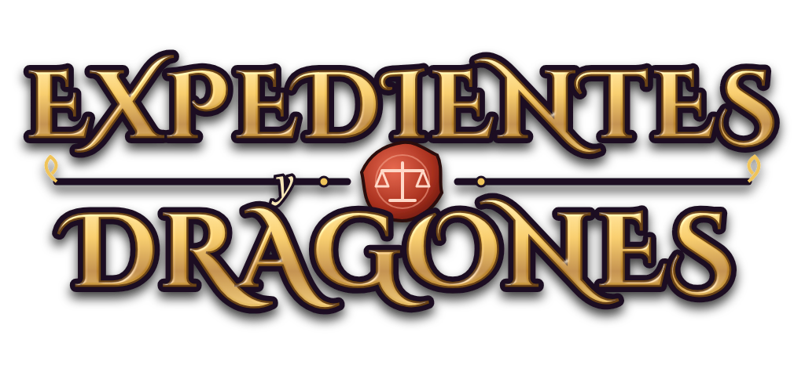
Texto, reglas adaptadas e ilustraciones de este manual: © 2026 Leonel Díaz. Todos los personajes, lugares e instituciones de la República de Expedientia son ficticios; cualquier parecido con una ventanilla real es pura coincidencia y algo de experiencia.
El sistema de tiradas se basa en el System Reference Document 5.2, publicado bajo licencia Creative Commons Atribución 4.0. Atribución exigida por la licencia:
This work includes material from the System Reference Document 5.2 ("SRD 5.2") by Wizards of the Coast LLC, available at https://www.dndbeyond.com/srd. The SRD 5.2 is licensed under the Creative Commons Attribution 4.0 International License, available at https://creativecommons.org/licenses/by/4.0/legalcode.
Este juego no usa marcas, logotipos, personajes ni ambientaciones de ningún otro juego de rol.
Expedientes y Dragones es un juego de rol cooperativo en el que cada jugador interpreta a un abogado o abogada recién salido de la facultad que abre su estudio frente a la Corte, en un país inventado con instituciones sospechosamente familiares: la República de Expedientia.
Ahí, una noche, los expedientes olvidados del Archivo Central empezaron a moverse. Los formularios desarrollaron colmillos, los plazos aprendieron a explotar y las colas se volvieron, literalmente, infinitas. Detrás de todo crece una criatura que nadie ha visto completa: la Carga Procesal, un dragón hecho de trámites que nadie atendió.
Los jugadores no blanden espadas: presentan escritos, piden medidas cautelares, plantean nulidades y, cuando todo falla, se toman un café en la cafetería del juzgado. Ganan expedientes, reputación y honorarios, y deben decidir qué hacer cuando un señor muy amable ofrece «agilizar» el trámite.
Este manual sirve para dos cosas: jugar en mesa con lápiz, papel y dados, y entender las reglas que usa la aplicación para celular del mismo nombre. Las dos versiones comparten el corazón del sistema: un dado de veinte caras, seis características y la prueba jurídica.
Uno a cuatro jugadores y una persona que dirija la partida (el Relator). Un dado de veinte caras (d20) y, si es posible, dados de 4, 6, 8 y 100 caras. Copias de la hoja de abogado (página 32), lápices y una tarde libre de audiencias.
Es un juego de humor de oficio. No es asesoría legal ni reemplaza la consulta con un abogado colegiado. Las preguntas jurídicas que aparecen en la aplicación se verifican en fuentes oficiales peruanas antes de publicarse.
La República de Expedientia es un país de volcanes nevados, ciudades de piedra blanca y ventanillas. Muchas ventanillas. Su capital judicial se levanta a los pies de un volcán dormido, con arcos de sillar que brillan al atardecer y un río que todos llaman el Trámite porque nunca se sabe cuándo va a llegar.
En el centro de la ciudad está el Palacio de Justicia, de donde parten las calles hacia la Mesa de Partes, la Sala de Contrataciones y el temido Archivo Central. Alrededor crecen los negocios de siempre: la cafetería del juzgado, donde se resuelven más casos que en las salas; la librería jurídica, donde todo cuesta un poco más; y el Pasaje del Coimero, donde nada es lo que parece.
Los personajes acaban de alquilar un cuarto frente a la Corte con Gonzabio, el socio fundador, que arma los expedientes y los defiende como un escudo, y con Lion, el investigador que lee hasta los anexos que nadie abre. Tiene un escritorio cojo, una impresora que funciona los martes y una placa en la puerta con el apellido mal escrito. Ahí llegan los clientes, ahí se guardan los honorarios y ahí se decide qué caso aceptar.
Nadie sabe cuándo nació. Don Eusebio, que lleva treinta años en el juzgado, jura que la vio por primera vez «un martes». Se alimenta de cada escrito sin proveer, de cada notificación que no llegó y de cada «vuelva mañana». Cuanto más crece, más criaturas escapan del Archivo Central. Derrotarla es la meta de toda la campaña; contenerla, el trabajo de cada día.
Expedientia se parece a la vida real del litigante, pero exagerada hasta lo fantástico. Las criaturas representan problemas del sistema, nunca a personas concretas: no hay jueces, servidores ni colegas reales retratados. El humor apunta a los trámites, no a la gente que los atiende.
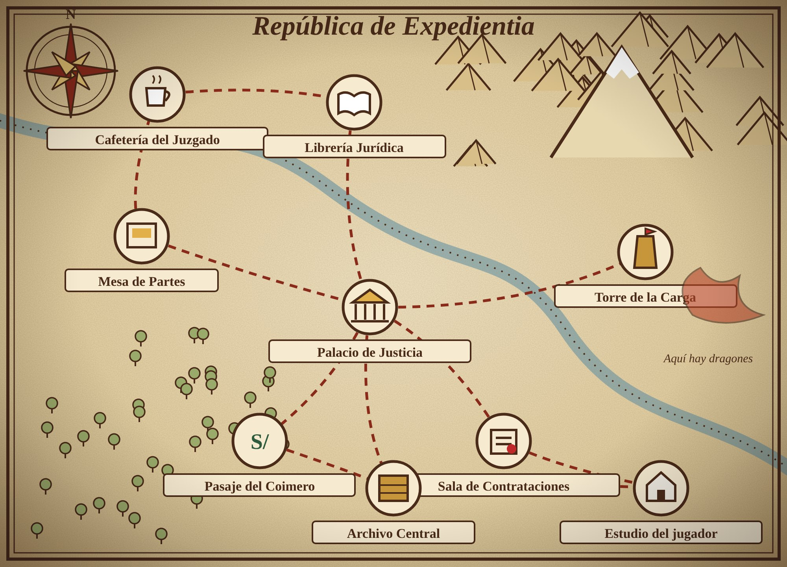
Mapa de la República de Expedientia, tal como lo dibujó un practicante en la parte de atrás de una cédula de notificación.
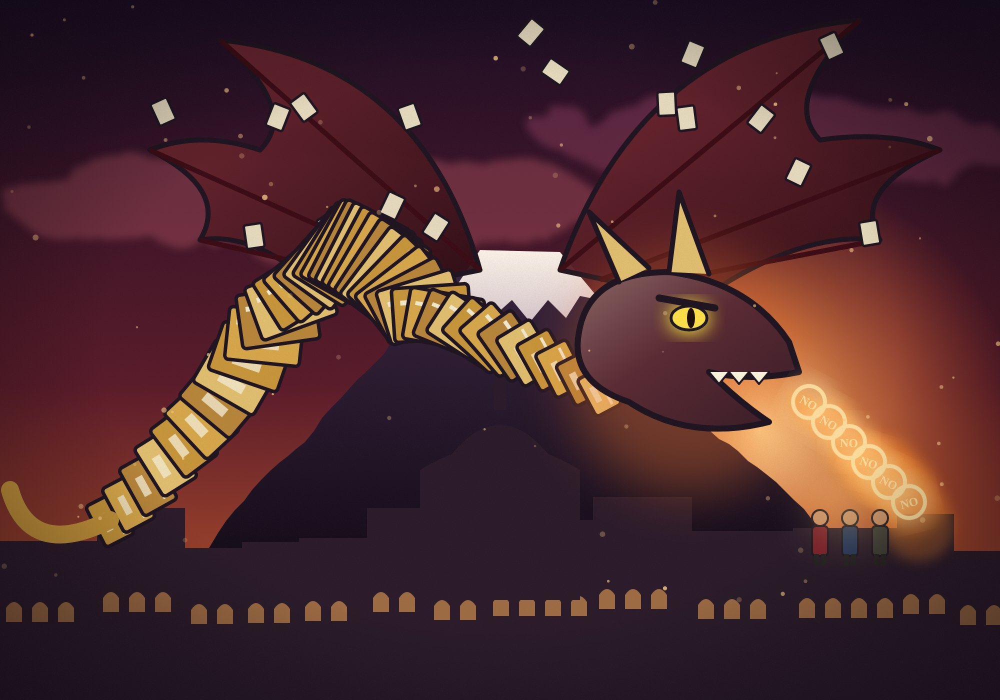
La Carga Procesal sobrevuela la ciudad. Sus escamas son carpetas; su aliento, sellos de «NO HA LUGAR».
Una partida de Expedientes y Dragones es un expediente: un caso que llega al estudio y que el equipo debe llevar de la primera ventanilla hasta la resolución final. Cada expediente se divide en salas, y en cada sala sucede algo: un combate contra criaturas del sistema, un trámite que hay que superar, una audiencia con un cliente que cambia su versión, una pausa en la cafetería o una tentación.
El Relator describe la sala; los jugadores dicen qué hacen sus abogados; los dados deciden si lo logran. Al final del expediente espera un jefe: una criatura mayor que custodia la resolución. Si el equipo vence, el caso se declara fundado; si cae, el expediente se archiva… y en Expedientia lo archivado también resucita.
Una partida en la aplicación dura entre 15 y 20 minutos. En mesa, un expediente completo ocupa una sesión de dos o tres horas, y una campaña encadena varios expedientes hasta enfrentar a la Carga Procesal.
Litigar. El combate táctico en una cuadrícula, con poderes inspirados en figuras procesales.
Investigar. Revisar expedientes, encontrar la fecha que salva el plazo, descubrir qué requisito pide la criatura.
Decidir. Aceptar o rechazar atajos, proteger la reputación del estudio, elegir qué casos tomar.
Relator: quien dirige la partida. Paciencia: los puntos de vida del abogado. Fundado: sacar 20 natural. Improcedente: sacar 1 natural. Sala: cada escena del expediente. Honorarios: la moneda del juego. Reputación: lo que el gremio piensa del estudio, de 0 a 100.
Cada jugador interpreta a un abogado o abogada del estudio. No hace falta saber derecho para jugar: el personaje sabe lo que el jugador no sabe, y los dados lo representan. Crear un personaje toma unos diez minutos.
Seis números del 1 al 20 describen al abogado. Cada uno tiene un modificador que se suma a las tiradas: es el valor menos 10, dividido entre 2 y redondeado hacia abajo.
| Valor | 1 | 2–3 | 4–5 | 6–7 | 8–9 | 10–11 | 12–13 | 14–15 | 16–17 | 18–19 | 20 |
|---|---|---|---|---|---|---|---|---|---|---|---|
| Modificador | −5 | −4 | −3 | −2 | −1 | +0 | +1 | +2 | +3 | +4 | +5 |
Firmeza. Fuerza física y temple: cargar expedientes de mil folios, sostener una puerta que se cierra, no retroceder ante un «Vuelva Mañana».
Agilidad procesal. Rapidez de manos y de pies: llegar antes del cierre de ventanilla, esquivar una notificación defectuosa, actuar primero.
Aguante. Resistencia: soportar la cola, la audiencia de seis horas y el tercer café. Se suma a la Paciencia en las reglas avanzadas.
Doctrina. Conocimiento jurídico y memoria: citar la norma, recordar el criterio del tribunal, revisar el expediente sin perderse.
Criterio. Intuición y buen juicio: leer al cliente, detectar el requisito correcto, darse cuenta de que el plazo vence hoy.
Oratoria. Presencia y palabra: alegar, negociar, convencer a un cliente de que diga la verdad.
La Paciencia son los puntos de vida del abogado. Los ataques de las criaturas la reducen; cuando llega a 0, el abogado cae: se va a su casa a dormir y no participa en el resto del expediente. La Defensa es el número que una criatura debe igualar o superar con su tirada para afectarlo.
Si un jugador nuevo no sabe qué elegir, ofrécele Civilista o Administrativista: son las especialidades del prototipo de la aplicación y las más probadas.
| Habilidad | Característica | Para qué sirve |
|---|---|---|
| Cargar expedientes | Firmeza | Mover, sostener o arrastrar algo pesado. |
| Aguantar la fila | Aguante | Resistir el cansancio, el hambre y la espera. |
| Llegar a tiempo | Agilidad procesal | Correr, esquivar y moverse entre la multitud. |
| Pasar desapercibido | Agilidad procesal | Moverse sin llamar la atención por los pasillos. |
| Presentar al vuelo | Agilidad procesal | Deslizar un escrito por la ventanilla justo antes del cierre. |
| Normativa | Doctrina | Recordar leyes, reglamentos y procedimientos. |
| Jurisprudencia | Doctrina | Recordar cómo se resolvieron casos parecidos. |
| Revisar el expediente | Doctrina | Encontrar la fecha, el folio o el error escondido. |
| Cuentas y tasas | Doctrina | Calcular plazos, montos, aranceles e intereses. |
| Leer al cliente | Criterio | Saber si alguien miente, oculta algo o tiene miedo. |
| Atención a plazos | Criterio | Notar lo que está por vencer o lo que cambió. |
| Orientarse en la burocracia | Criterio | Encontrar la oficina correcta a la primera. |
| Primeros auxilios del ánimo | Criterio | Calmar a un cliente o a un colega desbordado. |
| Trato con mascotas del cliente | Criterio | Ganarse al perro que custodia los documentos. |
| Alegar | Oratoria | Exponer con claridad y fuerza ante cualquiera. |
| Negociar | Oratoria | Llegar a un acuerdo que convenga al cliente. |
| Imponerse | Oratoria | Exigir con firmeza, sin perder las formas. |
| Farolear | Oratoria | Aparentar más de lo que se sabe. Mal visto: si sale mal, baja la reputación. |
Las habilidades representan lo que el abogado aprendió fuera del aula: en la cola, en la ventanilla y en el pasillo. Cada habilidad depende de una característica. Si tu personaje es competente en una habilidad, suma su bonificador de competencia (+2 en los primeros niveles) además del modificador de la característica.
Al crear el personaje elige cuatro habilidades. Las especialidades sugieren algunas, pero ninguna está prohibida: un Tributarista que sabe alegar es perfectamente posible, aunque raro.
Cuando nadie es competente, se tira igual: d20 más el modificador de la característica. Un abogado sin experiencia también puede tener suerte en Mesa de Partes; lo raro es que la tenga dos veces seguidas.
Lucía, Civilista, quiere encontrar en un expediente de 800 folios la fecha en que se notificó la demanda. El Relator pide una prueba de Revisar el expediente (Doctrina) de dificultad 15. Lucía tiene Doctrina 16 (+3) y es competente (+2): tira el d20, saca 11 y suma 5. Total 16: encuentra la fecha en el folio 612, escondida entre dos copias del DNI del abuelo.
Cada abogado del estudio domina una rama del derecho. La especialidad fija sus características sugeridas, su forma de atacar y sus poderes. Civilista y Administrativista son las especialidades del prototipo de la aplicación; las otras cuatro son de expansión y sus números pueden ajustarse tras las pruebas de juego.
La memoria del código y la paciencia de un archivero.
Domina contratos, propiedad, familia y sucesiones. Es quien recuerda la norma exacta en el momento justo y quien sabe que una buena medida cautelar vale más que mil alegatos. En el combate prefiere controlar el campo: inmoviliza al enemigo más peligroso y anula sus jugadas.
Paciencia 12 (+6 por nivel) · Defensa 13 · Movimiento 3
Ataque. Doctrina, 1d8 de daño, alcance 2 casillas.
Habilidades sugeridas. Normativa, Revisar el expediente, Jurisprudencia, Leer al cliente.
Poderes. Medida cautelar e Nulidad (página 13).
Personalidad. Metódica, desconfía de las fotocopias y lleva siempre un código con cuarenta separadores de colores.
Conoce cada ventanilla y a cada sello por su nombre.
Se mueve en el laberinto de la administración pública como en su casa. Sabe qué formulario pide cada oficina y qué hacer cuando una entidad no responde. En el combate apoya al equipo: deja repetir tiradas, paraliza enemigos con una queja bien puesta y gana salas por silencio.
Paciencia 11 (+6 por nivel) · Defensa 12 · Movimiento 3
Ataque. Criterio, 1d6 de daño, alcance 3 casillas.
Habilidades sugeridas. Orientarse en la burocracia, Atención a plazos, Normativa, Negociar.
Poderes. Recurso de apelación, Queja y la pasiva Silencio administrativo.
Personalidad. Optimista incorregible; colecciona cargos de recepción como otros coleccionan estampillas.
Llega primero a la escena y nunca suelta la lupa.
Investigadora nata, trabaja con pruebas, testigos y tiempos cortos. Es la más rápida del estudio y la que mejor detecta lo que no encaja. En el combate golpea antes que nadie y rompe las defensas formales de las criaturas.
Paciencia 11 (+6 por nivel) · Defensa 13 · Movimiento 4
Ataque. Agilidad procesal, 1d8 de daño, alcance 1 casilla.
Habilidades sugeridas. Revisar el expediente, Leer al cliente, Llegar a tiempo, Pasar desapercibido.
Poderes. Flagrancia y Allanamiento.
Personalidad. Habla poco, anota todo y jamás se sienta de espaldas a la puerta.
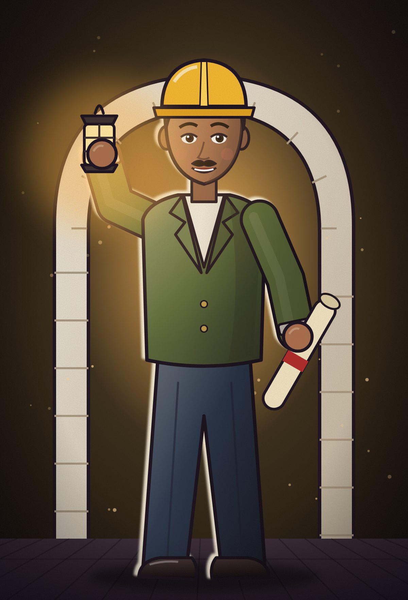
Donde hay un equipo cansado, él enciende el farol.
Defiende a trabajadores y empresas en conflictos de planilla, despidos y beneficios. Conoce el valor de un descanso a tiempo. En el combate sostiene al grupo: recupera la Paciencia de sus aliados y revela las debilidades de las criaturas.
Paciencia 14 (+6 por nivel) · Defensa 13 · Movimiento 3
Ataque. Firmeza, 1d6 de daño, alcance 1 casilla.
Habilidades sugeridas. Aguantar la fila, Primeros auxilios del ánimo, Negociar, Cuentas y tasas.
Poderes. Beneficio social e Inspección.
Personalidad. Saluda a todos los vigilantes por su nombre y siempre trae pan para compartir.
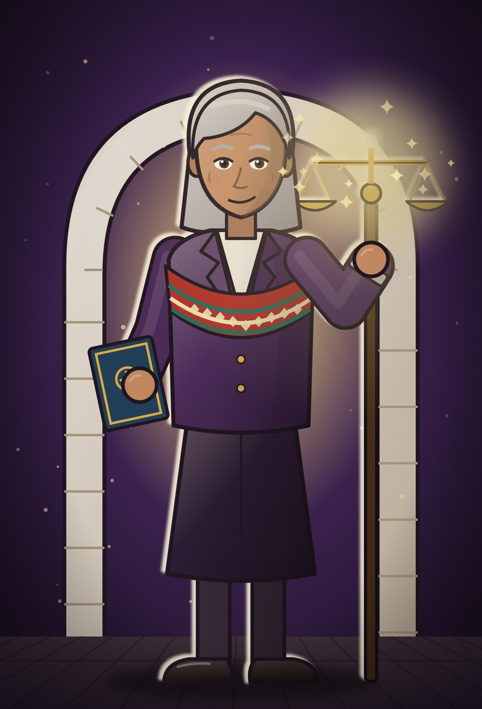
Cuando todo falla, ella invoca los derechos.
Veterana de mil procesos, conoce los derechos fundamentales y las garantías que los protegen. Su presencia tranquiliza al equipo. En el combate protege: libera a los aliados inmovilizados y desvía el daño que reciben.
Paciencia 11 (+6 por nivel) · Defensa 12 · Movimiento 3
Ataque. Oratoria, 1d6 de daño, alcance 3 casillas.
Habilidades sugeridas. Alegar, Jurisprudencia, Imponerse, Leer al cliente.
Poderes. Amparo y Hábeas corpus.
Personalidad. Cita de memoria, lleva una manta tejida por su abuela y no ha perdido la calma desde 1993.
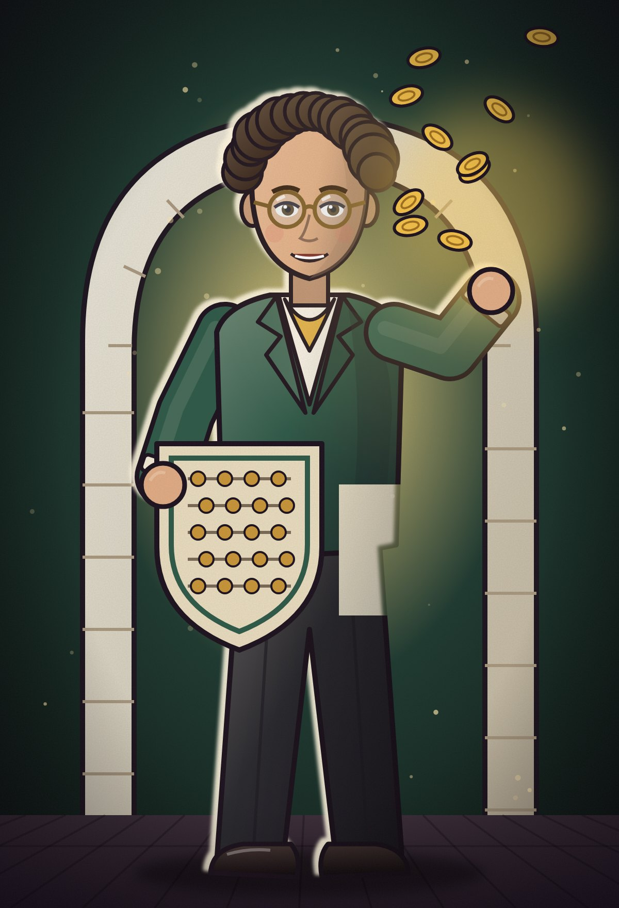
Cada sol cuenta; cada error de cálculo, también.
Experto en impuestos, aranceles y cuentas públicas. Encuentra el error en la liquidación que nadie vio. En el combate debilita: rebaja la Defensa de las criaturas y reparte el daño que recibe el equipo en cuotas.
Paciencia 12 (+6 por nivel) · Defensa 14 · Movimiento 3
Ataque. Doctrina, 1d6 de daño, alcance 2 casillas.
Habilidades sugeridas. Cuentas y tasas, Normativa, Atención a plazos, Revisar el expediente.
Poderes. Fiscalización y Fraccionamiento.
Personalidad. Calcula la propina al céntimo y tiene una calculadora para cada día de la semana.
Cuando un abogado intenta algo cuyo resultado es incierto, el Relator pide una tirada. Se lanza un dado de veinte caras y se suma el modificador de la característica que corresponda y, si el personaje es competente, su bonificador de competencia. Si el total iguala o supera la dificultad, lo logra.
Contra una criatura, la dificultad es su Defensa. Contra el entorno, el Relator la fija con esta tabla:
| Dificultad | Ejemplo en Expedientia |
|---|---|
| 5 · Muy fácil | Encontrar la Mesa de Partes en el primer piso. |
| 10 · Fácil | Llenar un formulario sin tacharlo. |
| 12 · Normal | Presentar el requisito correcto en un trámite. |
| 15 · Media | Encontrar un folio perdido en un expediente grueso. |
| 20 · Difícil | Conseguir una cita para hoy. |
| 25 · Muy difícil | Que la impresora del estudio funcione un viernes. |
| 30 · Casi imposible | Que la cola avance por sí sola. |
Si el dado muestra un 20 natural, la tirada es Fundada: en un ataque acierta siempre y se tiran el doble de dados de daño (el modificador no se duplica). Si muestra un 1 natural, es Improcedente: el ataque falla siempre, sin importar los modificadores. En las pruebas de características solo cuenta el total, pero el Relator puede narrar un 20 o un 1 con especial gracia.
Algunas situaciones dan ventaja: se tiran dos d20 y se usa el mayor. Otras imponen desventaja: se tiran dos y se usa el menor. Si una tirada tiene ventaja y desventaja a la vez, se anulan y se tira un solo dado. Nunca se acumulan dos ventajas.
Dan ventaja, por ejemplo: acertar una prueba jurídica, usar un Escrito pre-firmado o un Código anotado, o que un aliado distraiga a la criatura. Dan desventaja: actuar con el plazo vencido, atacar a una criatura que no se ve o trabajar sin dormir.
Cuando dos personajes compiten (un abogado intenta pasar desapercibido y un Tramitador lo vigila), ambos tiran y gana el total más alto. En caso de empate, se mantiene la situación como estaba.
La prueba jurídica es el sello del juego: una pregunta real de derecho peruano con cuatro opciones que el jugador, no el personaje, debe responder. Se usa antes de una tirada importante.
En la aplicación las preguntas salen de un banco revisado por un abogado. Cada pregunta indica la norma o resolución en la que se basa, con fecha y enlace a la fuente oficial, y solo entra al juego cuando está verificada. En mesa, el Relator puede preparar sus propias preguntas siguiendo la misma regla: si no se pudo verificar en la fuente oficial, no se usa.
En el Perú, el procedimiento ante las entidades públicas se rige por la Ley 27444, Ley del Procedimiento Administrativo General, cuyo Texto Único Ordenado vigente fue aprobado por el Decreto Supremo 006-2026-JUS (publicado en El Peruano el 30 de abril de 2026). Edición oficial del Ministerio de Justicia en gob.pe: https://www.gob.pe/institucion/minjus/informes-publicaciones/8441836.
Las tiradas no reemplazan a la historia: la cuentan. El Relator describe qué sucede con cada resultado, y conviene que un fallo también haga avanzar la partida. En Expedientia, fallar un trámite casi nunca detiene el caso: lo encarece. Se subsana a la segunda, se pierde tiempo, el cliente se impacienta.
| d20 | Resultado narrativo de un trámite |
|---|---|
| 1 | Improcedente. El escrito vuelve con tres observaciones nuevas y un sello que nadie había visto. |
| 2–6 | Observado. Hay que subsanar: se pierden 20 minutos y 2 de Paciencia. |
| 7–11 | Recibido «a condición». Pasa, pero el Relator guarda una complicación para después. |
| 12–19 | Recibido. El sello cae con un sonido que alegra el alma. |
| 20 | Fundado. Recibido, proveído y con una copia de cortesía para el cliente. |
No hace falta tirar por todo. Si el abogado tiene tiempo y no hay presión, lo logra. Las tiradas se reservan para cuando fallar es interesante.
Algunos expedientes tienen plazo: un número de minutos de juego antes de que el caso se declare «improcedente por extemporáneo». Cada sala consume minutos (un combate, 4 más 2 por ronda; un trámite, 10 si sale bien y 20 si sale mal; la cafetería, 15). El Relator lleva la cuenta a la vista de todos.
Cuando las criaturas del sistema bloquean el paso, empieza el combate. Se juega por rondas, y en cada ronda todos actúan una vez, en orden de iniciativa.
Al comenzar, cada participante tira d20 + su modificador de Agilidad procesal. Se actúa de mayor a menor. Si hay empate, actúa primero quien tenga mayor Agilidad procesal y, si persiste, los abogados antes que las criaturas.
En su turno, cada personaje puede hacer, en el orden que quiera:
Para atacar, el objetivo debe estar dentro del alcance, contado en casillas. Se tira d20 + modificador de la característica de ataque + competencia, contra la Defensa del objetivo. Si acierta, se tira el dado de daño de la especialidad más el mismo modificador y se resta de la Paciencia del objetivo.
Un abogado con Paciencia 0 cae y deja el expediente. Una criatura con Paciencia 0 queda desestimada y se retira del tablero. Si todo el equipo cae, el expediente se archiva.
Inmovilizado: no puede moverse ni actuar durante 2 turnos. Observado: el golpe no cumple el requisito de la criatura y no hace daño. En silencio: la criatura no actuó en su turno; si una criatura queda 2 turnos en silencio y hay un Administrativista en la sala, el equipo gana la sala.
El tablero de 6 × 8 casillas. La Civilista (C) puede moverse por las casillas azules; el Formalismo (F) está a su alcance de ataque tras moverse. P es un Plazo que Vence y N una Notificación Defectuosa.
Los poderes llevan el nombre de figuras procesales, pero en el juego funcionan como habilidades especiales. No describen cómo operan esas figuras en el derecho real; para eso están los libros y las fuentes oficiales.
| Poder | Especialidad | Tipo | Efecto |
|---|---|---|---|
| Medida cautelar | Civilista | Acción | Inmoviliza a una criatura a 3 casillas o menos durante 2 turnos. Se recarga en 3 rondas. |
| Nulidad | Civilista | Reacción | Anula la última acción de una criatura y devuelve la Paciencia que quitó. Se recarga en 3 rondas. |
| Recurso de apelación | Administrativista | Reacción | Un aliado repite su última tirada de ataque fallida. |
| Queja | Administrativista | Acción | Inmoviliza a una criatura durante 2 turnos. Se recarga en 3 rondas. |
| Silencio administrativo | Administrativista | Pasiva | Si una criatura no actúa 2 turnos seguidos, el equipo gana la sala. |
| Flagrancia | Penalista | Reacción | Ataca de inmediato a una criatura que entra en su alcance. |
| Allanamiento | Penalista | Acción | Un ataque que ignora el requisito de la criatura y la mitad de su Defensa por encima de 10. |
| Beneficio social | Laboralista | Acción | Todos los aliados a 2 casillas recuperan 1d6 de Paciencia. Una vez por sala. |
| Inspección | Laboralista | Acción | Revela el rasgo y el requisito vigente de una criatura; el equipo tiene ventaja contra ella esta ronda. |
| Amparo | Constitucionalista | Reacción | Cuando un aliado recibe daño, lo reduce a la mitad. |
| Hábeas corpus | Constitucionalista | Acción | Libera a un aliado inmovilizado o empujado y le permite moverse de inmediato. |
| Fiscalización | Tributarista | Acción | La Defensa de una criatura baja 2 puntos hasta el final de la sala. |
| Fraccionamiento | Tributarista | Reacción | Reparte el daño que recibe un aliado entre él y el Tributarista. |
| Casación | Todo el equipo | Especial | Una vez por expediente, el equipo repite cualquier tirada, pero con dificultad 18. |
Un poder que «se recarga en 3 rondas» no puede volver a usarse hasta que pasen tres rondas completas. Así la Medida cautelar y la Queja no se encadenan sin fin, y las criaturas siempre tienen una oportunidad de actuar.
La Civilista inmoviliza al Plazo que Vence con una Medida cautelar: mientras está inmovilizado, el plazo se suspende y no explota. Si además el Administrativista está en la sala, dos turnos de silencio ganan la sala sin un solo golpe.
Cada expediente cerrado da experiencia al estudio. Al acumular suficiente, los abogados suben de nivel: ganan 6 puntos de Paciencia máxima, mejoran su competencia y avanzan en la carrera, de practicante a socio.
| Nivel | Experiencia | Competencia | Título |
|---|---|---|---|
| 1 | 0 | +2 | Practicante |
| 2 | 300 | +2 | Practicante |
| 3 | 900 | +2 | Practicante |
| 4 | 2 700 | +2 | Practicante |
| 5 | 6 500 | +3 | Bachiller |
| 6 | 14 000 | +3 | Bachiller |
| 7 | 23 000 | +3 | Bachiller |
| 8 | 34 000 | +3 | Bachiller |
| 9 | 48 000 | +4 | Abogado |
| 10 | 64 000 | +4 | Abogado |
| 11 | 85 000 | +4 | Abogado |
| 12 | 100 000 | +4 | Abogado |
| 13 | 120 000 | +5 | Asociado |
| 14 | 140 000 | +5 | Asociado |
| 15 | 165 000 | +5 | Asociado |
| 16 | 195 000 | +5 | Asociado |
| 17 | 225 000 | +6 | Socio |
| 18 | 265 000 | +6 | Socio |
| 19 | 305 000 | +6 | Socio |
| 20 | 355 000 | +6 | Socio |
El Relator reparte experiencia al cerrar cada expediente: 100 por cada criatura menor desestimada, 300 por un jefe, 50 por cada sala superada sin pelear y 100 extra si el caso se declara fundado. En la aplicación los números exactos dependen del caso.
En los niveles 4, 8, 12, 16 y 19, cada abogado suma 2 puntos a una característica o 1 punto a dos características, sin pasar de 20.
Practicante (niveles 1 a 4): carga los expedientes y aprende dónde queda cada ventanilla. Bachiller (5 a 8): ya presenta escritos con su nombre. Abogado (9 a 12): litiga sin que nadie le revise los escritos. Asociado (13 a 16): los clientes preguntan por él. Socio (17 a 20): su apellido va en la placa, bien escrito.
El estudio empieza con Reputación 50, en una escala de 0 a 100. Rechazar sobornos, ganar casos difíciles y denunciar a la red del Coimero la suben; los atajos la bajan. Con Reputación 70 o más aparecen los aliados honestos: el Suboficial Quispe y la Especialista Mendoza.
Cada vez que el estudio acepta la oferta del Coimero, el Relator suma 10 puntos a un número secreto: el expediente disciplinario. Los jugadores no lo ven. Algún día, en el peor momento, ese expediente aparecerá sobre la mesa.
Además de experiencia, cada expediente deja honorarios, la moneda del juego. Se ganan al desestimar criaturas (15 por sala de combate, 60 por el jefe, 50 por la red del Coimero) y al resolver bien las audiencias (10 o 20). Los honorarios se gastan en la librería jurídica o, para los más supersticiosos, en el puesto del Ekeko de los Honorarios, que cobra en honorarios del juego y nunca «a cuenta».
| Objeto | Precio | Efecto |
|---|---|---|
| Escrito pre-firmado | 30 | Se gasta para tener ventaja en una tirada cualquiera. |
| Café doble | 20 | Todo el equipo recupera su Paciencia máxima. |
| Código anotado | 40 | La próxima prueba o trámite se tira con ventaja. |
| Sello de recepción de la suerte | 25 | Una vez por expediente, convierte un «Observado» en «Recibido». |
| Termo de anís | 15 | Recupera 1d6 de Paciencia a un abogado. |
| Agenda con alarma | 35 | El equipo sabe siempre cuántos minutos quedan y gana 10 minutos una vez. |
| Copias certificadas | 10 | Ventaja contra el Formalismo durante una sala. |
| Paraguas del juzgado | 20 | Defensa +1 contra Notificaciones Defectuosas. |
Los tres primeros objetos existen en la aplicación; los demás son para el juego en mesa.
Un buen Relator no regala honorarios: los pone a prueba. Ofrece una recompensa grande a cambio de un riesgo grande, o enfrenta a los jugadores con una elección: ¿gastar en el Café doble para sobrevivir al jefe, o guardar para la próxima campaña?
Un cliente agradecido que trae a su familia al estudio. Un servidor público honesto que recuerda el nombre del abogado. Una Especialista que comparte el requisito vigente. En Expedientia, la reputación abre más puertas que los honorarios.
Entre expediente y expediente, el estudio paga 10 honorarios de alquiler y 5 de fotocopias. Si no puede pagar, empieza el siguiente caso con un abogado de menos Paciencia máxima (−2 a todos) hasta ponerse al día. Es una regla para grupos que disfrutan administrar su estudio; los demás pueden ignorarla.
En algunas salas aparece un señor muy amable que ofrece «agilizar» el trámite. No ataca: tienta. El equipo puede aceptar (recupera toda la Paciencia, pero suma 10 al expediente disciplinario), rechazar (Reputación +3) o denunciar (Reputación +2 y se abre una sala extra, más difícil, contra la red del Coimero, con la mejor recompensa del caso).
El Relator es quien describe el mundo, interpreta a las criaturas y a los personajes no jugadores, y aplica las reglas. No juega contra el equipo: juega para que la historia sea buena. Su trabajo es que cada expediente tenga tensión, humor y al menos una decisión difícil.
Cada expediente sigue la misma forma, que también usa la aplicación:
| Sala | Qué pasa | Tirada típica |
|---|---|---|
| Combate | Criaturas del sistema bloquean el paso. | Ataques contra Defensa |
| Trámite | Una puerta exige «el requisito correcto». | Criterio, dificultad 12 |
| Audiencia | El cliente cambia su versión de los hechos. | Oratoria o Criterio, 13 |
| Cafetería | Pausa: todos recuperan la mitad de su Paciencia. | Ninguna |
| Librería | Se compran objetos con honorarios. | Ninguna |
| Coimero | Una oferta tentadora. | Decisión del equipo |
| Jefe | La criatura mayor del caso. | Combate especial |
El Cliente cambia su versión. El equipo elige: confrontarlo (Oratoria, dificultad 13), y si sale bien el Cliente reconoce la versión correcta y paga 20 de honorarios extra; o revisar el expediente (Criterio, dificultad 13), y si sale bien se encuentra una fecha que da 20 minutos más de plazo. Si falla, la audiencia se reprograma y se pierde tiempo.
Cuando no hay tiempo de preparar, tira en la tabla de clientes (página 19), elige la zona y tira 1d6 para la complicación:
| d6 | Complicación |
|---|---|
| 1 | El caso tiene plazo: 120 minutos. |
| 2 | El Cliente oculta un documento clave. |
| 3 | La contraparte también tiene abogado… y es mejor. |
| 4 | El Coimero aparece dos veces. |
| 5 | Una criatura del Archivo Central se coló en la zona. |
| 6 | Don Eusebio está de vacaciones. |
Usa una ficha a la vista de todos con el reloj del caso, las pruebas jurídicas usadas (máximo 3), la Casación (una por expediente) y las recargas de los poderes. En la aplicación, todo esto aparece en pantalla.
Prepara tres frases del Cliente antes de la sesión. Nada da más vida a una audiencia que un cuñado que vino de testigo y recuerda una tercera fecha.
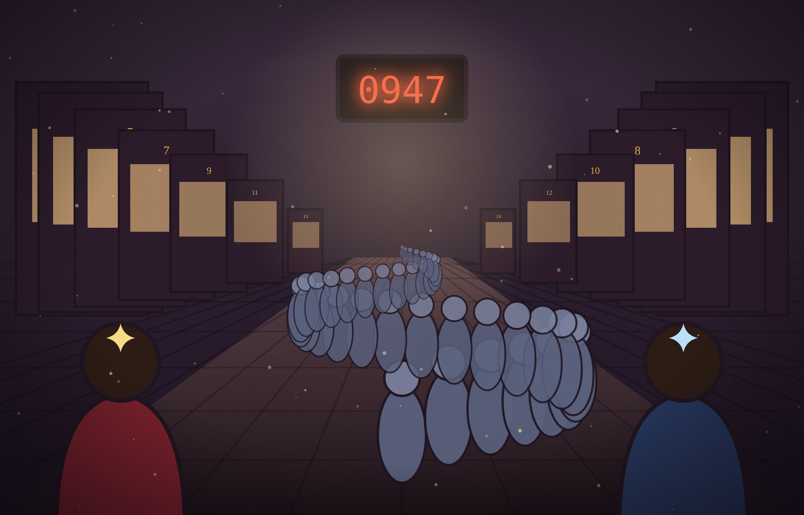
La Mesa de Partes en hora punta. El letrero marca el turno 0947; la cola no ha avanzado desde la mañana.
Entre sala y sala, los abogados recorren Expedientia: pasillos, escaleras, oficinas sin letrero y sótanos que no figuran en los planos. El Relator describe lo que ven con dos o tres detalles concretos: el olor a papel húmedo, el vigilante que ya los conoce, el reloj de pared que adelanta diez minutos.
Las tablas de las páginas siguientes ayudan a improvisar. Tira cuando el equipo entra a un lugar nuevo, cuando pierde tiempo o cuando la partida necesita un empujón.
Alterna salas tensas con salas tranquilas. Después de un combate difícil, una cafetería se agradece; después de dos trámites seguidos, el equipo agradecerá algo a lo que pegarle.
Si el equipo decide ignorar la Mesa de Partes y buscar al juez en su casa, no lo impidas: haz que el camino sea interesante. Las criaturas del sistema no viven solo en el Palacio; también hay Formalismos en las notarías y Plazos que Vencen en la puerta de cualquier oficina.
Antes de empezar, acuerden qué temas quedan fuera del juego. Un caso de familia puede tocar fibras sensibles; el Relator cambia de tema sin pedir explicaciones si alguien lo solicita.
Tira 1d100 cuando el equipo entra a un lugar del Palacio de Justicia o cuando pierde tiempo en una sala.
| d100 | Sucesos en el Palacio de Justicia |
|---|---|
| 01–05 | Se va la luz en todo el piso. Las ventanillas siguen atendiendo «con linterna». |
| 06–10 | Un Usuario en cola reconoce a un abogado: «¿Usted no es el del caso de mi tía?». |
| 11–15 | Cambia el sistema informático. Todos los turnos se reinician desde el 001. |
| 16–20 | Aparece un Formalismo exigiendo una copia que nadie conoce. |
| 21–25 | Don Eusebio pasa con un termo y ofrece café: +1d4 de Paciencia a todos. |
| 26–30 | Una Notificación Defectuosa revolotea buscando «al señor de la casa». |
| 31–35 | Rosita cierra la ventanilla «por cinco minutos». Se pierden 15. |
| 36–40 | Se cae una pila de expedientes; uno de ellos abre los ojos. |
| 41–45 | Un abogado de pasillo susurra que «conoce a alguien». Es el Coimero. |
| 46–50 | El cliente llama por teléfono para decir que encontró otro documento… de 1987. |
| 51–55 | Llega un Plazo que Vence con el número 3 encendido. |
| 56–60 | El vigilante pide que todos se pongan en fila india. La fila se convierte en una Cola. |
| 61–65 | Alguien gritó «¡Mesa de Partes virtual!». Nadie sabe dónde queda. |
| 66–70 | Se encuentra un sello perdido: ventaja en el próximo trámite. |
| 71–75 | La Especialista Mendoza pasa apurada y deja caer una pista sobre el requisito vigente. |
| 76–80 | Una impresora imprime sola la palabra «IMPROCEDENTE» cien veces. |
| 81–85 | El reloj de pared se detiene. El Relator decide si el plazo también. |
| 86–90 | Un Fraccionador se esconde entre los recibos de pago. |
| 91–95 | Un estudiante de derecho pide ayuda con su tarea. Ayudarle da Reputación +1. |
| 96–00 | Silencio absoluto. Algo grande se mueve en el sótano. |
| d20 | Excusas de ventanilla |
|---|---|
| 1 | Falta firma. |
| 2 | Falta la firma de la firma. |
| 3 | El sistema está lento. |
| 4 | Ese formato ya no se usa. |
| 5 | Ese formato todavía no se usa. |
| 6 | Venga con su abogado. ¿Usted es el abogado? Venga con otro. |
| 7 | Es en la otra ventanilla. |
| 8 | La otra ventanilla es esta, pero mañana. |
| 9 | Se pasó la hora por un minuto. |
| 10 | Falta copia simple del original certificado. |
| 11 | No hay sello. |
| 12 | El jefe está en reunión desde marzo. |
| 13 | Tiene que pagar la tasa en el banco del frente. |
| 14 | El banco del frente se mudó. |
| 15 | Su DNI está vencido. Ah, no; es el mío. |
| 16 | Hay que llenarlo con lapicero azul. |
| 17 | Tiene que traer un folder manila. No, ese no. |
| 18 | Saque turno. |
| 19 | Vuelva mañana. |
| 20 | Ya está. ¿Algo más? |
Tira 1d20 cuando un abogado intenta presentar algo y el Relator necesita un motivo para que no funcione.
| d20 | Clientes que llegan al estudio |
|---|---|
| 1 | Una señora con tres bolsas de documentos que «por si acaso» trajo todo. |
| 2 | Un joven emprendedor que quiere ganar una licitación con una sola fotocopia. |
| 3 | Un jubilado que lleva once años esperando una resolución. |
| 4 | Una empresa de transporte con un problema que llegó «hace poco» (en 2009). |
| 5 | Una pareja que no se pone de acuerdo ni en por qué vino. |
| 6 | Un ingeniero que trae su caso en una hoja de cálculo de 40 pestañas. |
| 7 | Una vecina cuya pared invadió el vecino… o al revés. |
| 8 | Un dirigente de mercado que quiere formalizar a 300 comerciantes. |
| 9 | Un estudiante cuyo título se perdió en el Archivo Central. |
| 10 | Una heredera que acaba de descubrir que tiene catorce primos. |
| 11 | Un panadero al que le llegó una multa por un horno que no tiene. |
| 12 | Una periodista que investiga a la red del Coimero. |
| 13 | Un señor que jura que presentó su escrito y tiene el cargo «en algún lado». |
| 14 | Una profesora a la que nunca le pagaron sus vacaciones truncas. |
| 15 | Un municipio pequeño que necesita contratar un puente. |
| 16 | Una familia que quiere inscribir la casa de la abuela. |
| 17 | Un músico al que le copiaron su huaino. |
| 18 | Una cooperativa de cafetaleros con una deuda tributaria misteriosa. |
| 19 | Un perro (con su dueño) involucrado en un conflicto vecinal. |
| 20 | Alguien que no dice su nombre y paga por adelantado. Sospechoso. |
Cada cliente es una semilla de expediente: decide qué criatura del sistema custodia su problema.
Los personajes no jugadores dan voz a Expedientia. Todos son ficticios: humor de oficio, sin retratar a personas reales.
Conoce cada pasillo y cada atajo honesto. Siempre tiene un termo de café y un comentario: «En Mesa de Partes los escritos no se pierden, doctor. Se independizan.» Es el guía del equipo y nunca acepta coimas.
Sabe dónde está cada escrito, aunque no siempre quiere decirlo. Amable con quien es amable. «Si lo presentó, está en la cola. Todo termina en la cola.»
Abogada veterana, socia retirada de un gran estudio. Da consejos secos y certeros: «Los atajos siempre cobran después.» Sospecha que algo en el Archivo Central se está comiendo los expedientes.
Honesto y abrumado. Si la Reputación del estudio es 70 o más, revela el requisito vigente del jefe de la Sala de Contrataciones.
Policía de pocas palabras que se suma al equipo contra la red del Coimero si la Reputación es alta. Firmeza 14, Paciencia 16, Defensa 14, ataque 1d8.
Cambia de cara en cada caso, pero siempre es el mismo: preocupado, impaciente y con una versión de los hechos que muta en cada audiencia.
| d6 | Lo que dice Don Eusebio |
|---|---|
| 1 | «En Mesa de Partes los escritos no se pierden, doctor. Se independizan.» |
| 2 | «Esa cola no avanza desde 1998. Suerte.» |
| 3 | «Aquí se resuelven más casos en la cafetería que en las salas.» |
| 4 | «Lo archivado también resucita.» |
| 5 | «El sello bueno lo tiene Rosita; el malo, todos los demás.» |
| 6 | «Treinta años en este juzgado y todavía me sorprendo, doctor.» |
Toda criatura del sistema nace de un problema concreto: un requisito absurdo, un plazo injusto, una notificación que no llega. Para crear una nueva, elige el problema, dale un rasgo que lo represente en el tablero y fija sus números comparándola con las del bestiario: una criatura menor tiene entre 3 y 9 de Paciencia y Defensa de 9 a 12; un jefe, 30 o más de Paciencia y una mecánica que obligue al equipo a pensar.
Dos personajes acompañan al equipo desde el primer caso. El Relator los interpreta, aunque un jugador puede llevar a uno de ellos si el grupo es pequeño. Sus poderes son propuestas para el juego en mesa.
Puso la mitad del alquiler y toda la terquedad. Aprendió el oficio en la ventanilla, no en la facultad, y sabe que un expediente bien foliado aguanta cualquier golpe. En combate se planta delante del equipo con el maletín abierto; fuera de él, es quien sigue la pista de los escritos perdidos hasta el Archivo Central.
«Usted litiga y yo armo los expedientes. Mientras no se nos caiga el expediente, no nos gana.»
Escudo de expedientes. Una vez por sala, cuando un abogado a 2 casillas o menos recibe daño, Gonzabio lo reduce en 1d6 + 2. Expediente foliado: el equipo empieza cada caso con un Escrito pre-firmado gratis.
Terno gris, corbata roja, lentes y una lapicera que nunca suelta. Lee la letra pequeña, cuenta los días hábiles dos veces y abre los anexos que nadie abre, porque ahí se esconden los monstruos. Fue él quien cruzó las firmas de los tres primeros casos y encontró el mismo sello: el del Archivo Central.
«Leí el anexo 7. El requisito se escribió pensando en una sola empresa, y no es la nuestra.»
Letra pequeña. Una vez por expediente, Lion revela el rasgo o el requisito vigente de una criatura, aunque la Reputación sea baja. Doble conteo: en un caso con reloj, el equipo gana 10 minutos la primera vez que pierde tiempo en un trámite.
Las criaturas del sistema nacieron de los trámites que nadie atendió. Cada ficha indica sus seis características, su Paciencia, su Defensa, su Movimiento y el rasgo que la hace única. Los números son los del prototipo y pueden ajustarse.
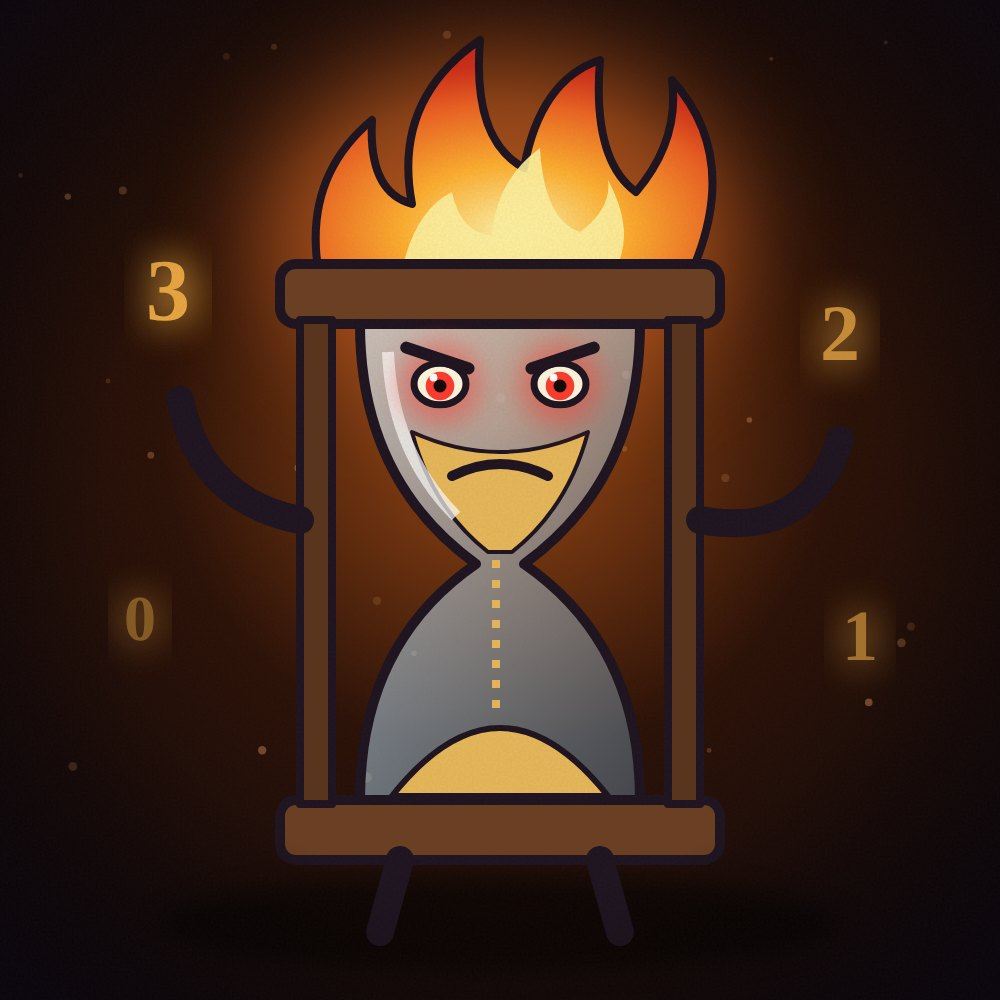
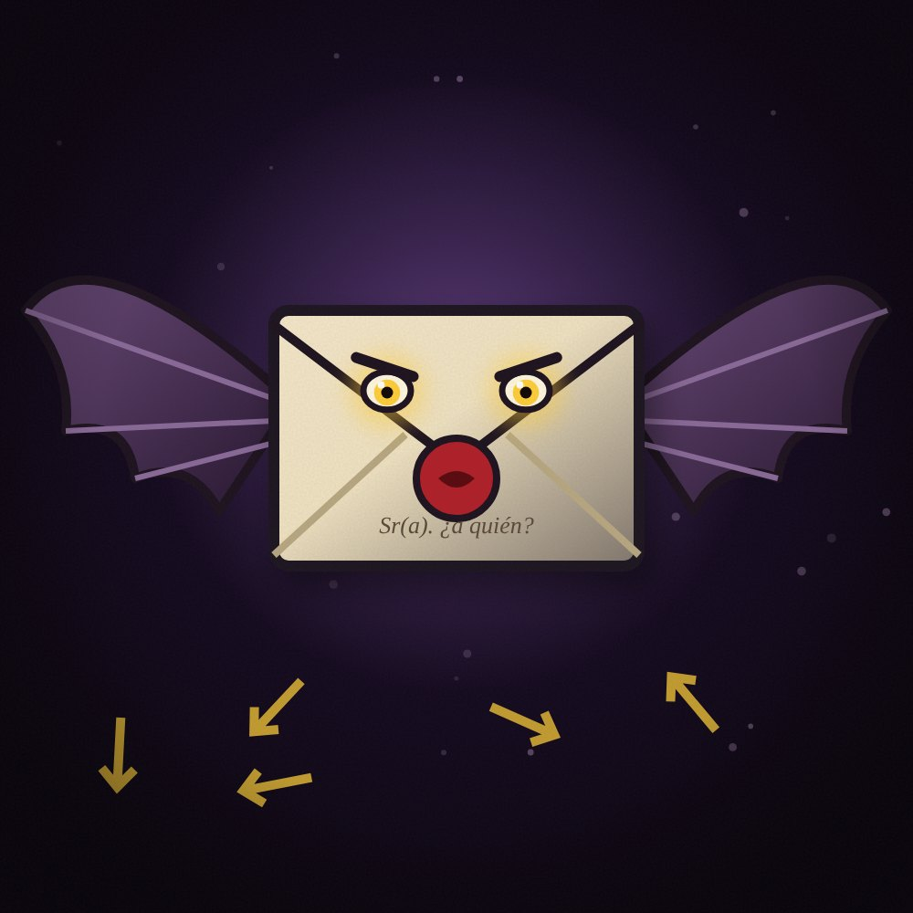
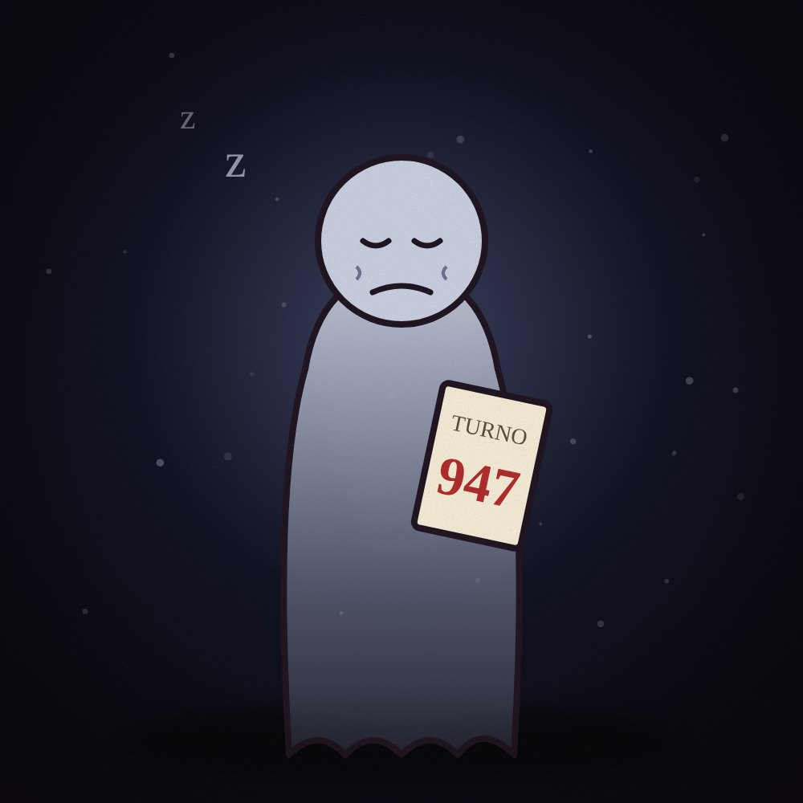
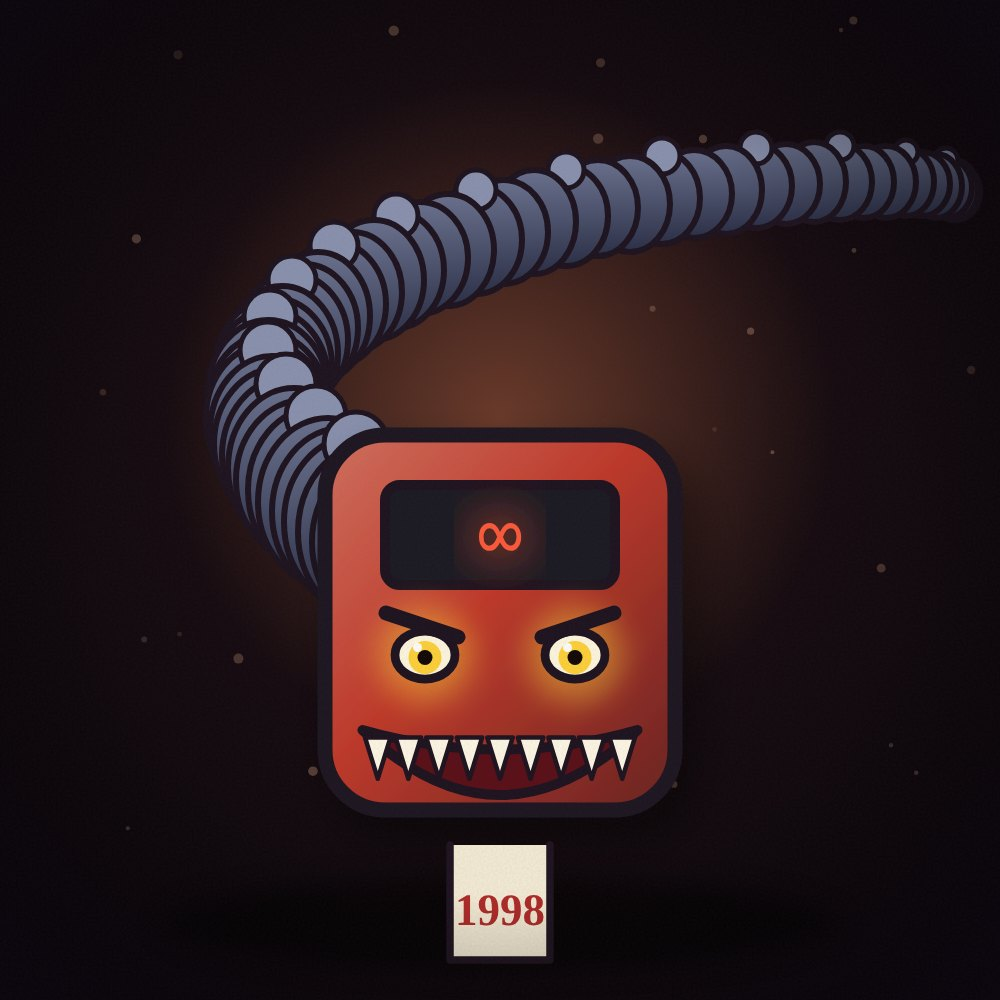
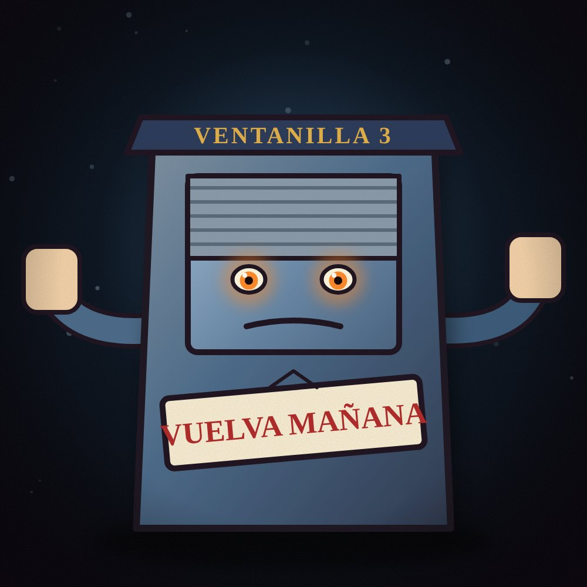
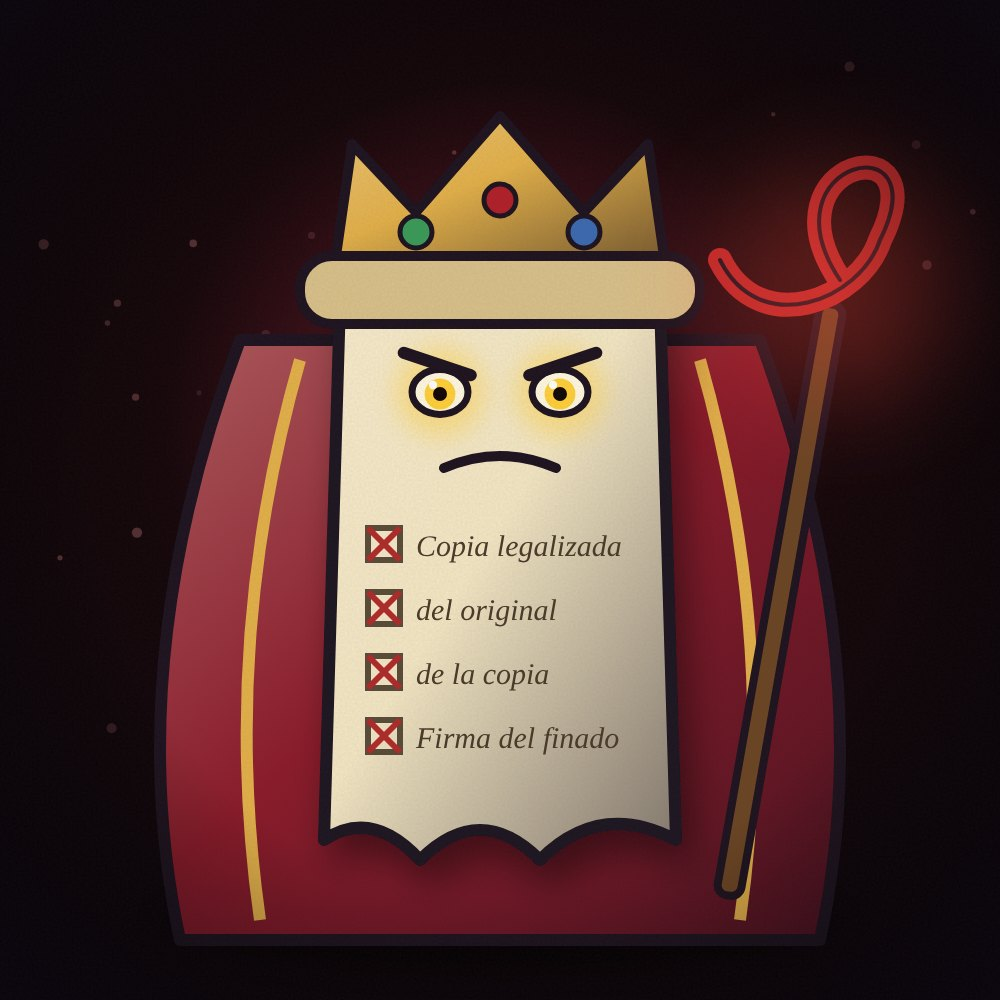
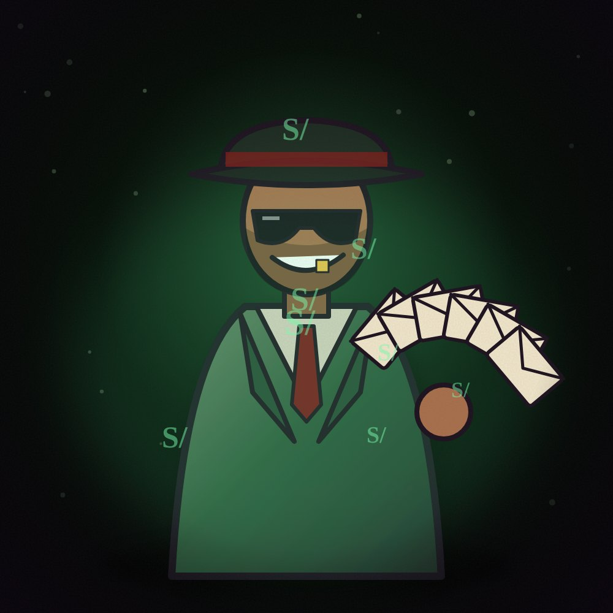
| Nivel del equipo | Sala de combate sugerida | Jefe sugerido |
|---|---|---|
| 1 | 3 criaturas menores (Paciencia total 15 a 25) | Paciencia 30, Defensa 12 |
| 2–4 | 3 a 4 criaturas menores, una con rasgo peligroso | Paciencia 40 a 55, Defensa 13 |
| 5–8 | 4 criaturas menores o 2 con Paciencia 15 | Paciencia 60 a 80, Defensa 14 |
| 9 o más | Grupos mixtos con Tramitadores y Expedientes olvidados | La Carga Procesal (Paciencia 120) |
Para un equipo de más nivel, suma 4 de Paciencia y 1 de Defensa a cada criatura menor por cada 2 niveles por encima del primero, y aumenta un paso su dado de daño (1d4 pasa a 1d6). A los jefes, súmales 10 de Paciencia por nivel del equipo.
Gran dragón, jefe final de la campaña
Nadie la ha visto completa. Sus escamas son carpetas de colores; sus alas, actas sin firmar; su aliento, una lluvia de sellos de «NO HA LUGAR». Duerme enroscada alrededor de la torre de expedientes del Archivo Central y crece con cada escrito que no se provee.
La Carga Procesal no aparece en la aplicación del prototipo: es la meta de la campaña completa. Estos números son una propuesta para el juego en mesa.
1. El despertar. La Carga Procesal sigue enroscada en la torre; solo ataca con la cola y lanza Expedientes olvidados.
2. El vuelo. Al perder un tercio de su Paciencia, despliega las alas y usa el Aliento de sellos.
3. La resolución. Con menos de la mitad, la torre empieza a caer. Cada ronda, un abogado puede intentar uno de los tres trámites finales.
«Ese escrito no se perdió solo, doctores. Algo se lo comió.» Doctora Valdivia
El primer piso del Palacio de Justicia: un pasillo infinito de ventanillas numeradas, un letrero de turnos que avanza cuando quiere y una cola que serpentea hasta perderse en la penumbra. Aquí empieza casi todo caso, y aquí terminan muchos.
| d20 | Encuentro |
|---|---|
| 1–4 | Tres Formalismos bloquean el pasillo. |
| 5–7 | Dos Plazos que Vencen y una Notificación Defectuosa. |
| 8–10 | Un trámite: «falta copia legalizada del original de la copia». |
| 11–13 | Rosita cierra la ventanilla 3. Audiencia improvisada con el Cliente. |
| 14–16 | La cafetería del juzgado, abierta de milagro. |
| 17–18 | Un abogado de pasillo: el Coimero. |
| 19–20 | La cola se agita. La Cola Infinita despierta. |
Criaturas: Formalismo, Plazo que Vence, Notificación Defectuosa, Usuario en cola. Jefe: La Cola Infinita.
Una sala amplia con mesas largas, sobres cerrados y un reloj que marca la hora del cierre de propuestas. Aquí las empresas pequeñas intentan competir con requisitos hechos a la medida de nadie.
| d20 | Encuentro |
|---|---|
| 1–4 | Dos Vuelva Mañana custodian la mesa de recepción. |
| 5–8 | Un Fraccionador escondido entre los recibos. |
| 9–11 | Un trámite: las bases piden experiencia de 40 años a una empresa de 3. |
| 12–14 | La Especialista Mendoza, abrumada, pide ayuda para ordenar folios. |
| 15–17 | La librería jurídica en el pasillo. |
| 18–19 | Un Tramitador ofrece «la buena pro asegurada». |
| 20 | El Requisito Imposible se pone la corona. |
Criaturas: Vuelva Mañana, Fraccionador, Fracción, Formalismo. Jefe: El Requisito Imposible.
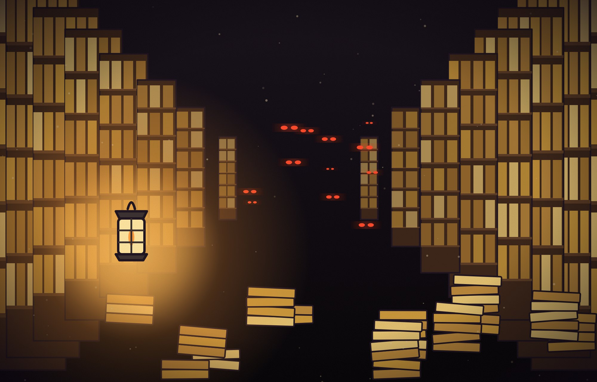
El sótano del Archivo Central, donde los expedientes olvidados abrieron los ojos por primera vez.
Kilómetros de estantes bajo el Palacio. La luz no llega más allá del tercer pasillo y el polvo tiene su propio clima. Aquí duerme la Carga Procesal, y desde aquí escapan sus criaturas.
| d20 | Encuentro |
|---|---|
| 1–5 | Tres Expedientes olvidados en un pasillo estrecho. |
| 6–8 | Un derrumbe de cajas: prueba de Agilidad procesal 13 o 1d6 de daño. |
| 9–11 | Un índice escrito a mano que solo entiende Don Eusebio. |
| 12–14 | Ojos rojos en la oscuridad: un Plazo que Vence de 1998. |
| 15–17 | Un rincón seco con un termo olvidado: descanso. |
| 18–19 | La red del Coimero vende expedientes «recuperados». |
| 20 | Un temblor. La Carga Procesal se da vuelta en su sueño. |
Criaturas: Expediente olvidado, Plazo que Vence, Tramitador. Jefe final: La Carga Procesal.
Una galería angosta detrás del Palacio, llena de puestos de fotocopias, sellos y «asesorías». Todo se ofrece rápido y barato. Nada es lo que parece. Solo se entra a pelear si el equipo denunció al Coimero.
| d20 | Encuentro |
|---|---|
| 1–5 | Dos Tramitadores y un Expediente olvidado. |
| 6–9 | Un puesto vende «sellos originales». Prueba de Criterio 14 para notar que son falsos. |
| 10–12 | Una periodista pide protección: sabe quién está detrás. |
| 13–15 | El Suboficial Quispe llega si la Reputación es 70 o más. |
| 16–18 | Una trampa: el pasaje se cierra; prueba de Firmeza 15. |
| 19–20 | El Coimero en persona ofrece una última tentación, el doble de grande. |
Criaturas: Tramitador, Expediente olvidado. Aliado posible: Suboficial Quispe.
Un mostrador, seis bancos y el mejor pan con chicharrón de la ciudad. Es zona neutral: ninguna criatura entra. Descansar aquí devuelve a todos la mitad de su Paciencia máxima y consume 15 minutos del reloj. Don Eusebio suele estar en el último banco y siempre tiene un dato.
Estantes hasta el techo, códigos de todos los años y una vendedora que sabe exactamente qué libro necesitas antes de que lo pidas. En la esquina, el puesto del Ekeko de los Honorarios, cargado de miniaturas de todo lo que un abogado desea: un código, un sello, una toga, una laptop que no se cuelga.
| d6 | Rumores de la cafetería |
|---|---|
| 1 | Dicen que en el sótano hay un expediente de 1950 que todavía espera respuesta. |
| 2 | La ventanilla 7 atiende rápido los jueves, pero nadie sabe por qué. |
| 3 | Alguien vio al Coimero almorzando con un Tramitador. |
| 4 | El Requisito Imposible le teme a la Especialista Mendoza. |
| 5 | La Carga Procesal ronca: por eso tiemblan los estantes. |
| 6 | Hay una Mesa de Partes virtual. Nadie la ha encontrado todavía. |
Usa la plantilla de zona de la página 33. Una buena zona tiene una imagen fuerte (una sala, un olor, un sonido), entre tres y cinco criaturas propias, un jefe con una mecánica que obligue a pensar y al menos un personaje no jugador honesto que ayude al equipo.
Esta aventura introduce a los jugadores en Expedientia. Está pensada para personajes de nivel 1 y ocupa tres sesiones, una por expediente. Es el mismo Acto 1 que cuenta la aplicación.
«República de Expedientia. Un país inventado, con instituciones sospechosamente familiares. Una noche, en el sótano del Archivo Central, los expedientes olvidados empezaron a moverse.»
Lee el prólogo en voz alta. Luego presenta a Don Eusebio, que pasa por el estudio con su termo: «Treinta años en este juzgado, doctor, y nunca había visto caminar a un expediente. Hasta el martes». La Doctora Valdivia deja una advertencia: «Cierre casos, gane reputación y no acepte atajos». Gonzabio golpea el escritorio cojo: «Socio, el cuarto será chico, pero el estudio es nuestro». Lion, sin levantar la vista de un anexo, añade: «Y yo leo la letra pequeña. Ahí se esconden los monstruos».
Planteamiento. El Cliente jura que presentó su escrito, pero no aparece en el sistema. «Tenía el cargo… bueno, tenía el cargo hasta el lunes.»
El Cliente entra sin tocar. Trae una bolsa de plástico con papeles, un paraguas que no necesita y la cara de alguien que acaba de ver cerrarse una ventanilla. «Doctor, yo presenté el escrito. Lo juro por mi madre. Tenía el cargo… bueno, tenía el cargo hasta el lunes.»
Desarrollo. Cuatro o cinco salas en la Mesa de Partes: un combate de entrada contra tres Formalismos, un trámite, una audiencia en la que el Cliente cambia la fecha de presentación, la cafetería y, con suerte, el Coimero.
Jefe. Rosita señala el fondo de la cola: «Al fondo está su escrito… y algo bastante más grande». La Cola Infinita, con 30 de Paciencia, suma un Usuario en cola por turno. Lion nota que la numeración de la cola está salteada: donde falta un número hay un escrito escondido. Un abogado que llegue a esa casilla y supere Revisar el expediente (dificultad 13) da ventaja a todo el equipo durante una ronda.
Cierre. Si ganan, el escrito aparece «con sello y todo». Gonzabio revisa los cargos de la semana: faltan cuarenta escritos, y todos pasaron por el Archivo Central.
Planteamiento. Quedan dos horas para presentar una apelación y la ventanilla está por cerrar. El expediente tiene reloj: 120 minutos.
Desarrollo. Las salas consumen tiempo; los Plazos que Vencen abundan. La audiencia es clave: revisar el expediente puede encontrar una fecha que dé 20 minutos más.
Jefe. La Cola Infinita de nuevo, ahora con el reloj en contra. Si se acaba el tiempo, el caso es «improcedente por extemporáneo».
El reloj de pared marca las tres. La ventanilla cierra a las cinco. Entre ustedes y la ventanilla hay un pasillo, dos Plazos que Vencen con los números encendidos y una cola que empieza a moverse como si respirara.
| Sala | Contenido |
|---|---|
| 1 | Combate: dos Plazos que Vencen y un Formalismo. |
| 2 | Trámite: «el formato de apelación cambió ayer». |
| 3 | Audiencia: el Cliente no recuerda cuándo lo notificaron. |
| 4 | Cafetería o Coimero, a elección del Relator. |
| 5 | Jefe: La Cola Infinita, con el reloj en contra. |
La Cola Infinita custodia el escrito del cliente desde 1998.
Planteamiento. Una empresa pequeña quiere ganar un proceso de selección, pero las bases piden requisitos que nadie cumple. La acción se traslada a la Sala de Contrataciones.
Desarrollo. Vuelva Mañana y Fraccionadores. La Especialista Mendoza aparece si la Reputación es 70 o más y revela el requisito vigente del jefe.
La Sala de Contrataciones huele a sobres cerrados y café frío. Sobre la mesa principal, un pergamino con corona los mira por encima de una lista de requisitos que crece mientras la leen. «Experiencia mínima: cuarenta años. Su empresa tiene tres. Observado.»
Jefe. El Requisito Imposible, con 32 de Paciencia, cambia la condición para recibir daño cada dos rondas y llama Formalismos. El equipo debe observar qué golpes funcionan y adaptarse. Si Lion está en la sala, ya leyó el anexo 7: puede revelar el primer requisito sin esperar a Mendoza.
Cierre. Si ganan, la empresa compite en igualdad de condiciones. Mendoza encuentra entre las bases un sello antiguo del Archivo Central: alguien está alimentando a la Carga Procesal desde adentro.
En cualquiera de los tres casos puede aparecer el Coimero. Si el equipo lo denuncia, añade una sala extra: la red del Coimero en la trastienda, con dos Tramitadores y, si la Reputación es alta, el Suboficial Quispe como aliado. Es la sala más difícil del caso y la que mejor paga: 50 de honorarios y Reputación +10.
Lion cruza las firmas de los tres casos y encuentra un mismo sello, el del Archivo Central. Gonzabio cierra el maletín: «Las tres pistas apuntan al mismo sótano, socio. Bajamos al Archivo Central». El Acto 1 termina con una certeza: la Carga Procesal existe y está despertando. Los siguientes actos llevan al equipo al Archivo Central, al Pasaje del Coimero y, finalmente, a la torre de expedientes donde duerme el dragón.
Si el equipo cae, no hay drama: Don Eusebio se encoge de hombros. «Archivado, doctor. No se preocupe: aquí lo archivado también resucita.» El caso puede reabrirse en la siguiente sesión, con las criaturas un poco más fuertes.
Por cada caso fundado: 60 de honorarios por el jefe, 15 por cada sala de combate y la experiencia correspondiente. Al cerrar los tres casos, los abogados deberían estar cerca del nivel 2 y el estudio, con una Reputación entre 55 y 70 si no aceptó atajos.
Expedientes y Dragones · Manual del juego · © 2026 Leonel Díaz · Se permite fotocopiar las plantillas para uso personal.
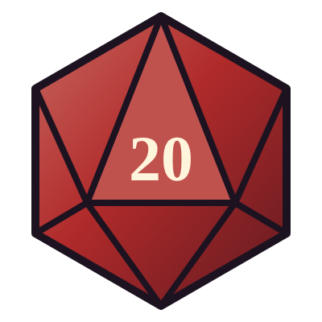
En la República de Expedientia, los formularios tienen colmillos, los plazos explotan y las colas no terminan nunca. Tu estudio acaba de abrir frente a la Corte y el primer cliente ya está en la puerta.
Este manual contiene todo lo necesario para jugar: creación de abogados con seis especialidades, el sistema del d20 con la prueba jurídica, combate táctico, un bestiario de criaturas del sistema, cuatro zonas, tablas para improvisar y la aventura completa El primer caso.
Litiga, investiga y vence al dragón de la burocracia.
Leonel Díaz · Arequipa, 2026